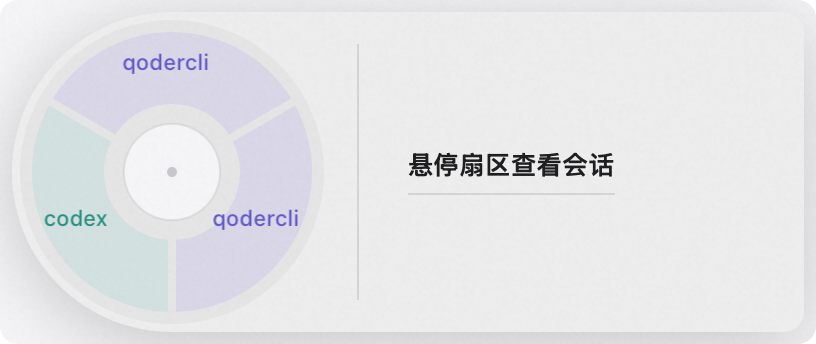

Disc on the left, card on the right
A frosted-glass panel: sectors colored by CLI on the left, a structured card for the hovered session on the right — task snippet, terminal, unsent draft.
Select files in Finder, press the hotkey, click a sector — the path lands at the cursor of a running AI CLI session. No retyping, no escaped pastes, no window juggling.
macOS 13+ · Apple Silicon & Intel · Default hotkey ⌃⌥F · Runs locally, no network access
qodercli has an unsent draft → bigger sector, pinned card
Built for the moment you spot a file in Finder and immediately want the AI to work on it — no typing in between.
Select one or more files in Finder: code, designs, logs, data files — anything.
A global hotkey brings up the halo panel anytime. Default ⌃⌥F, customizable in the menu bar.
Sectors are colored by CLI. Hover to preview the structured card: task snippet, terminal, unsent draft.
Click a sector and the path is inserted at the cursor of the target session — never auto-sent. Whether to hit return is up to you.
Running several agent sessions at once is the norm. Everything in PieDrop exists to get the file to the right one within a second.
A frosted-glass panel: sectors colored by CLI on the left, a structured card for the hovered session on the right — task snippet, terminal, unsent draft.
Prefer lists? Switch to menu mode — hover to expand the task snippet and draft details. Easier on tight screens.
Sessions with unsent input pin to the top of the list and get a wider sector on the disc — instantly visible among many parallel sessions.
ps scans agent processes, precisely paired with terminal windows by TTY. Idle zsh / bash / fish shells work too.
iTerm2 is written directly, no focus needed; Terminal.app goes through the clipboard + simulated ⌘V. The channel is picked per terminal.
No network access, no data collection, no background services. Hotkey, launch-at-login, panel style — all in the menu bar icon.

--demo modeThese CLIs are detected automatically via process scanning and shown in their own colors. Other CLI processes may be detected as generic agent sessions too.
iTerm2 is written directly without stealing focus; Terminal.app goes through the clipboard + simulated ⌘V. Idle shells work as well — for when you're writing cat, open, or grep and don't want to type a path.
Actual support depends on the terminal and CLI versions detected on your machine.
Grab the latest PieDrop-x.y.z.dmg from Releases, open it, and drag PieDrop into Applications.
A third-party tap is ready to go, one command:
brew install --cask ezreal777/tap/pie-drop
# First install asks you to trust the tap — confirm to proceedThe app is signed with a self-built certificate (no paid developer account), so macOS blocks the first launch. After that, rebuilds and upgrades open normally.
The app runs fully locally: no network access, no data collection. Draft preview only reads the last unsent line at the tail of the terminal screen.
No. The path is only inserted at the cursor of the target input box — add a sentence, hit return yourself, or delete it. In an idle terminal it simply sits on the command line for you to edit.
The Terminal.app channel pastes via simulated ⌘V (Accessibility); reading the Finder selection and locating session windows require Automation grants (Finder / Terminal / iTerm2). The iTerm2 channel writes through its own interface and doesn't rely on simulated keys.
Sectors are color-coded by CLI; hover any sector and the card on the right shows its task snippet, terminal, and unsent draft. Sessions with drafts also pin to the top and get a bigger sector — usually the one you want to continue.
It runs fully locally: no network access, no data collection, no background services. Draft preview only reads the last unsent input at the tail of the terminal screen, used for session identification and sorting.